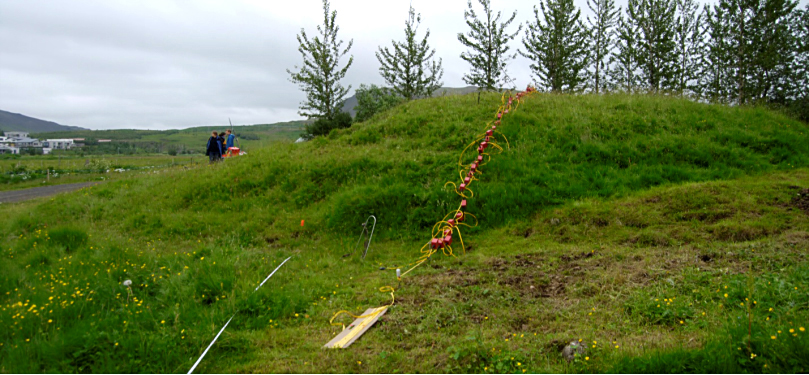

Archaeological Field Work | 2013 Season - Leiruvogur Harbor and Hinterland Research Mosfell Archaeological Project
The 2013 MAP objectives revolved around landscape-oriented research primarily at Leiruvogur harbor but also within the larger Mosfell Valley and surrounding areas, such as at Borg, a low highland site, and Skeggjastaðir, a medieval farmstead site. As such, methodologies were both varied and plentiful, including geophysics testing, oceanographic research, and test trenches.
The previously initiated Leiruvogur Harbor Research Project advanced to a new phase of survey for which specialists from the University of Kiel and the Centre for Baltic and Scandinavian Archaeology studied the harbor and surrounding areas with techniques such as sonar, GPR resistivity, and small-scale subsurface testing. Fieldwork was performed in drainage trenches of the bay, test cores for the purposes of dating were taken from Inner Skiphóll mound, and test trenches were excavated just west of this mound. Most significantly, the previously proposed hypothesis of the existence of a deeper, more open bay in the Viking Age, one which was highly suitable for the entry and landing of ships, was confirmed.
 Resistivity survey on Inner Skiphóll Mound in the Leiruvogur Bay.
At Borg, sub-surface coring and test-trenching was performed on largely intact mounds, producing data confirming that they contained cultural material. Following initial coring at Skeggjastaðir in 2009, geophysics surveys in 2013 precisely located areas of structural remains.
A digital modelling project in collaboration with the Department of Computer Science at St. Andrews University in Scotland was initiated, with the expressed desire to use MAP data to produce an immersive virtual model. The project will model the chieftain’s farmstead at Hrísbrú and the Mosfell Valley landscape around the year 1010, including not only the data concerning recovered material culture but also the architecture and that of the environment and topography.